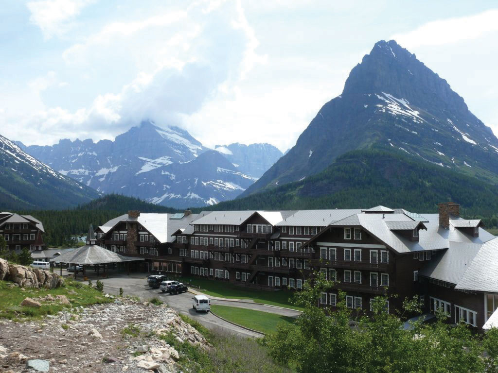
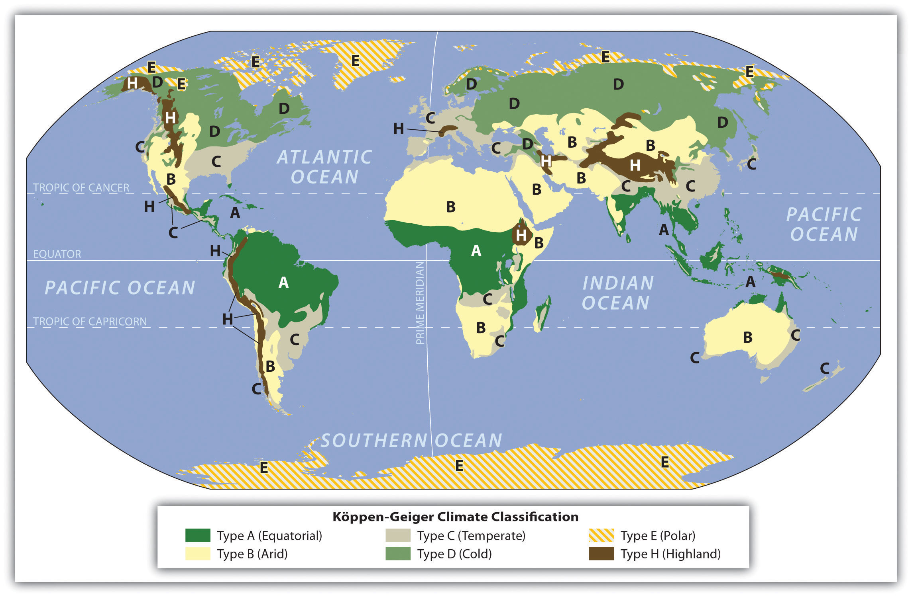
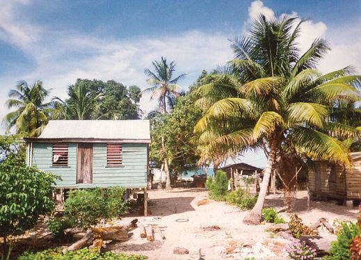
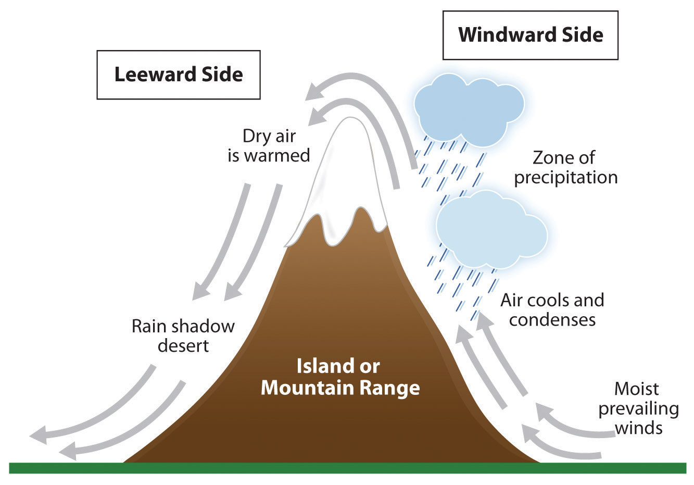
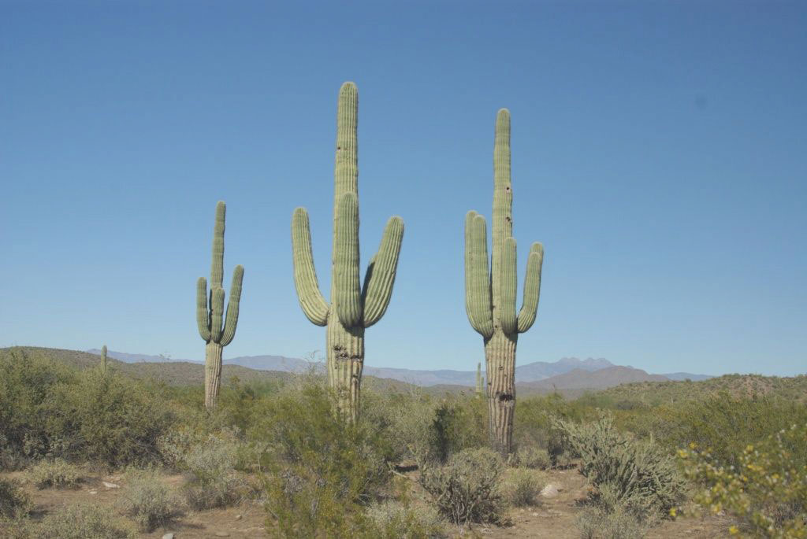
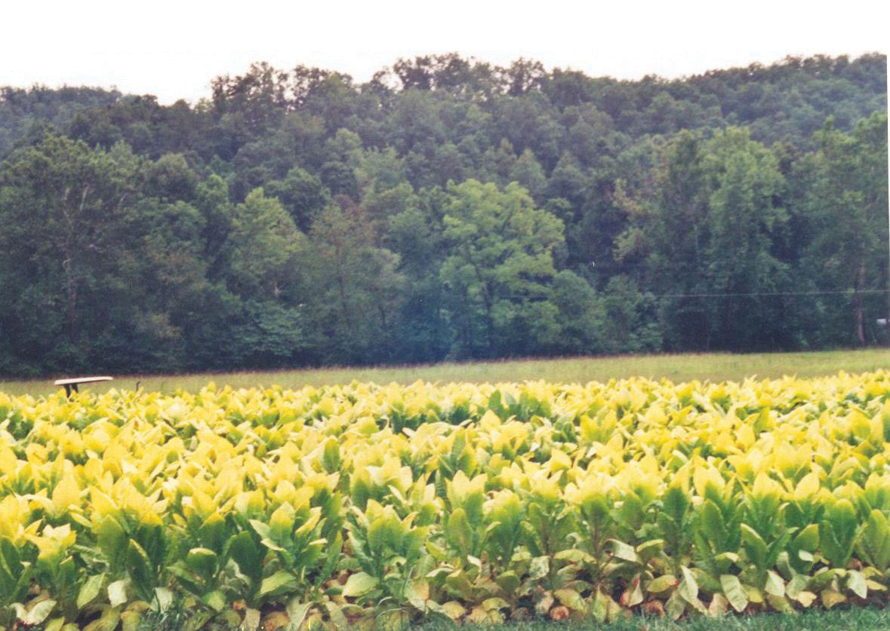
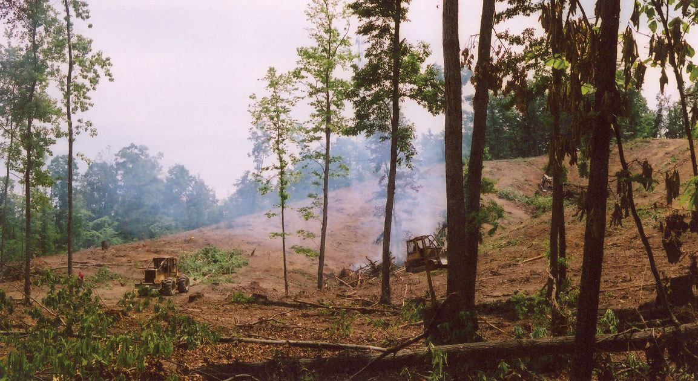
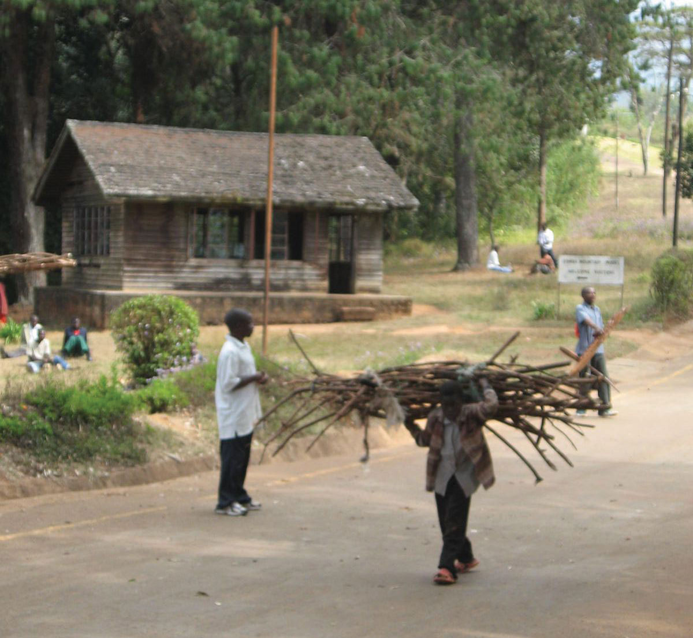
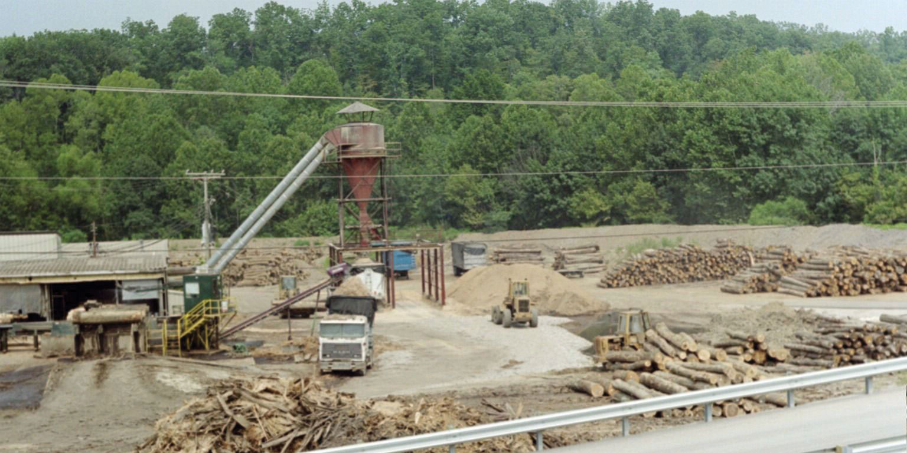
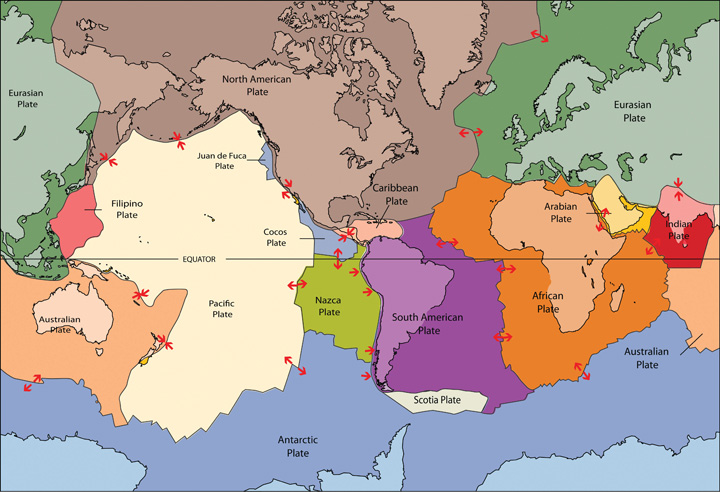

Figure 1.11 Glaciers in Glacier National Park, Montana
Mountainous type H climates vary with elevation, with warmer temperatures at the base and colder temperatures at higher elevations.
Source: Photo by R. Berglee.
The earth’s ability to receive and absorb sunlight is a primary factor in the earth’s environment, and it also has a big impact on human populations. There are no large cities or human communities in Antarctica because it is so cold; most of the sunlight filtering down to Antarctica is reflected off the earth at that latitude because of the tilt of the earth’s axis and the resulting angle of incoming solar radiation. Answering the basic questions of where most humans live on Earth and why they live there depends on understanding climate. Moderate type C climates usually provide the greatest opportunities for human habitation.
Since the region between the Tropic of Cancer and the Tropic of Capricorn receives the most direct sunlight throughout the year, it is favorable to plant and animal life, provided there is adequate moisture or precipitation. Humans have been living in the tropics for a long time, even when the ice sheets were covering parts of the midlatitudes. The problem with the tropics is that the soils are usually of poor quality and the nutrients have been leached out. Today, when we look at the earth and the distribution of human population, two main factors attract human habitation: moderate climates and access to water.
More than 70 percent of the earth’s surface is covered with water. The only problem is that less than 3 percent of the water is fresh, and most of that fresh water is stored in ice caps at the North or South Pole. This leaves less than 1 percent of the world’s fresh water for human use, usually in lakes, rivers, streams, or groundwater and underground aquifers. Climate plays an important role in where humans live because precipitation is necessary for growing crops, raising livestock, and supplying fresh water to urban communities.
Several geographers have developed categories to identify climate typesLong-term weather patterns based on environmental conditions, including temperature and precipitation.. Climate can be defined as a long-term average weather pattern evident in a particular region of the world. Weather is a term usually used to define conditions on a short-term or even daily basis. The two main elements in climate conditions are temperature and precipitation. For the purposes of this overview of world geography, the various climate types have been broken down into six basic types—A, B, C, D, E, and H—after the Köppen-Geiger classification system. Type H climates are actually a subset of the type E climate category.
Figure 1.12 Basic Climate Regions Based on the Köppen-Geiger Classification System (Local Conditions May Vary Widely)
Figure 1.13
Tropical type A climates experience warm temperatures year round and a higher annual rainfall, such as this location in coastal Belize.
Source: Photo by R. Berglee.
The humid tropical type A climate, usually found in the tropics, has warm temperatures year round with a high level of precipitation, typically in the form of rain. Type A climates have various subgroups that indicate how variably the rainfall is distributed throughout the year. Some type A climates produce a dry season and a wet season (monsoon), while others receive consistent rainfall throughout the year.
The dry type B climate is exemplified by the earth’s desert regions. Temperatures can be extreme, with little precipitation. Type B climate regions experience low rainfall and high temperatures during the day and cooler temperatures at night or during the winter season. Terrain in type B climates can range from sand deserts to prairie grasslands or steppes. Type B climates have fewer trees than most other climate areas.
There is a direct relationship between highlands and type B climates in various places in the world. This climate condition, known as the rain shadow effectWhen mountains or high elevation relief restrict precipitation from reaching the other side of the mountains, resulting in arid or desert-like conditions., or more accurately, the precipitation shadow effect, occurs when one side of a mountain range receives abundant rainfall while the region on the other side of the mountain range is a desert or has more arid climate conditions. This phenomenon is evident wherever there is terrain with enough elevation to restrict the movement of precipitation-bearing clouds.
Figure 1.14 Rain Shadow Effect
Rain shadows are created when prevailing winds carrying moisture rise quickly in elevation up a mountainside, where the air cools and condenses to precipitate out its moisture in the form of rain or snow. By the time the air mass hits the top of the mountain, its moisture is much reduced. The dried air rushes down the other side of the mountain range, where it increases in temperature. The warm, dry air coming off the mountains continues to pull moisture out of the land, resulting in desert or arid climate conditions.
Figure 1.15
Dry or arid type B climates such as central Arizona have fewer trees than other climates. The saguaro cactus can withstand long periods with little precipitation.
Source: Photo by R. Berglee.
The Hawaiian island of Kauai has an extreme example of the rain shadow effect. The island’s windward side receives more rain than almost any other place on Earth: as much as 460 inches (almost 40 feet) a year. Only a part of the island, however, receives that amount of rain. The height of the mountains causes a rain shadow on the dry leeward side, creating semidesert conditions and type B climates.
Death Valley in California is also a result of the rain shadow effect. Little rain falls on Death Valley because any moisture in the prevailing winds falls on the western side of the bordering mountain ranges. The whole state of Nevada is dry because of the rain shadow effect. All the rain coming off the Pacific Ocean falls on the coastal mountains and the Sierra Nevada in California. The mountains are high enough to shadow that region of Nevada, and the basin and ranges further the rain shadow effect on a local basis.
On the other side of the earth, the Himalayas are an excellent example of mountains that create the rain shadow effect. Most of western China has type B climates because of the rain shadow effect caused by high mountains that stop rain clouds from ever reaching the region. The southern side of the Himalayas receives extensive rainfall because of monsoon rains arriving from the Indian Ocean, but western China is essentially a desert. It is sparsely inhabited compared with the high-density regions in China Proper to the east, where rainfall is plentiful.
Figure 1.16
Moderate type C climates are good for agriculture. For example, in Appalachia, tobacco and hardwood forests grow well.
Source: Photo by R. Berglee.
Often described as moderate in temperature and precipitation, type C climates are the most favorable to human habitation in that they host the largest human population densities on the planet. Type C climates are found mostly in the midlatitudes bordering the tropics. Seasonal changes are pronounced, with a distinct winters and summers. Winters are cool to cold and summers are usually warm. Precipitation varies from low to high, depending on location. In the United States, C climates dominate the southeast and the West Coast.
Type C climates are not the most widespread on the planet, but they have attracted the largest human populations. One reason for the attraction has been the abundance of forests, farmland, and fresh water found in type C regions. The main population centers of the planet are in type C climates. With over seven billion people on the planet and growing, humans have populated most of the regions with type C climates and are now filling up the other areas that have A, B, or D climate types.
Type D climate regions are often found in the interiors of continents away from the moderating influence of large bodies of water. They are often farther north than type C regions, resulting in colder winters. Seasonal variations exist, with cool to hot summers and cold winters. Precipitation is usually in the form of rain in summer and snow in winter. Regions with type D climates can be found in the Great Lakes region of the United States, much of Canada, and a large portion of Russia.
Type E is an extreme climate type found in the polar regions near or to the north of the Arctic Circle and near or to the south of the Antarctic Circle. Regions with type E climates are cold with permanent ice or permafrost year round. Vegetation is minimal, and there are no trees. Temperatures may warm slightly during the short summer months but rarely rise above 50 degrees.
Type H highland climates are usually listed as a subcategory of type E climates. Mountain ranges can create a variety of climate types because of the change in elevation from the base of the range to the summit. Different climate types can be found on the same mountain at different elevations. Type H climates designate highlands or mountain terrain. Variations in climate exist on most mountain ranges. Climates at the base of mountains will vary depending on whether the mountains are found in the tropics or in the higher latitudes. For example, high mountains near the equator may have a type A climate at their base and a type E climate at their summit with various type C and type D climates between them. Type H climates are found where elevation differences are profound enough to provide different climate zones. Higher elevation relief can reach above the tree line and have permanent snow cover at the summit. The term relief is used in geography to indicate elevations of a land surface. Elevation zones with permanent ice or snow can resemble a type E polar climate.
The planet’s growing population has increased demands on natural resources, including forest products. Humans have been using trees for firewood, building homes, and making tools for millennia. Trees are a renewable resource, but deforestationThe removal of trees at an unsustainable rate. occurs when they are removed faster than they can be replenished. Most people in rural areas in developing countries rely on firewood to cook their food. Many of these areas are experiencing a fast decline in the number of trees available. People living in mainly type B climates may not have access to a lot of trees to start with; therefore, when trees are cut down for firewood or for building materials, deforestation occurs. In the tropical areas, it is common for hardwood trees to be cut down for lumber to gain income or to clear the land for other agricultural purposes, such as cattle ranching. Countries that lack opportunities and advantages look to exploit their natural resources—in this case, trees—for either subsistence agriculture or economic gain. Deforestation has increased across the globe with the rapid rise in worldwide population.
During the Industrial Revolution, European countries chopped down their forests at a rapid rate. Much of the British Isles was forested at one point, but today few forests remain on the British Isles, and they are typically protected. Colonialism brought the Europeans to the Americas. The United States, in its early development, pushed west from the original thirteen colonies, and many old growth forestsForests that have not been removed by humans. were cut down in the process. As railroad tracks were laid down and pioneer development pushed west into the Great Plains, where there were few trees, the great cutover occurred in the eastern and central forests—cutover is a term indicating the systematic deforestation of the eastern and central forests. Michigan and Wisconsin saw their trees removed in a systematic deforestation.
Figure 1.18
Forests are removed for timber, and burning the excess then clears the land for other purposes.
Source: Photo by R. Berglee.
Some areas were allowed to grow back, but many other areas were turned into farmland. Few old-growth forests remain in the United States. Today there are conflicts over how the timber industry is handling the forests in places such as the Pacific Northwest region of the United States.
Countries that are better off economically no longer have to cut down their own trees but can afford to substitute other resources or import lumber from other places. Developing regions of the world in Latin America, Africa, and parts of Asia are experiencing serious problems with deforestation. Deforestation is widespread: Residents of Haiti have cut down about 99 percent of the country’s forests; most of the wood has been used as fuel to cook food. People in Afghanistan have cut down about 70 percent of their forests. Nigeria has lost about 80 percent of its old-growth forests since 1990. Ethiopia has lost up to 98 percent of its forested acreage, and the Philippines has lost about 80 percent of its forests.
Brazil’s Amazon basin has undergone many projects that have driven deforestation. For example, about half the state of Rondônia in western Brazil has been deforested since 1990. The countries of Central America have lost about half their original forests, and deforestation continues on a systematic basis. Tropical regions of Southeast Asia and Africa are being exploited for their timber at unsustainable rates, causing deforestation that the next generation will have to deal with. India, with over a billion people, still has a high demand for firewood and building materials; their forests are declining faster than they can be replanted. China, with its billion plus population, has been attempting to address its deforestation problems by implementing a massive replanting program and conservation measures. Other countries are starting to adopt similar measures.
Figure 1.19
A man in Malawi carries firewood for cooking and heating purposes.
Source: Photo courtesy of Bryce Sitter.
Tropical rain forests only make up about 5 percent of the earth’s surface but contain up to 50 percent of the earth’s biodiversity. These forests are cut down for a variety of reasons. Norman Meyers, a British environmentalist, estimated that about 5 percent of deforestation in tropical regions is caused by the push for cattle production. Nineteen percent of these forests are cut down by the timber industry, 22 percent are cut down for the expansion of plantation agriculture, and 54 percent are removed due to slash-and-burn farming. Most tropical rain forests are located in the Amazon basin of South America, in central Africa, and in Southeast Asia. All these areas are looking for advantages and opportunities to boost their economies; unfortunately, they often target their tropical rain forests as a revenue source.
Deforestation causes more than the loss of trees for fuel, building materials, paper products, or manufacturing. Another related issue in the deforestation equation is soil erosion. Without the trees to hold the soil during heavy rains, soils are eroded away, leaving the ground in an unproductive state. In tropical areas, soils are often degraded and lack nutrients. Most of the nutrients in the tropical areas rest in decaying material at the base of the trees that supplies energy back into the ecosystem. Once the trees are removed, there is little replenishing of this energy supply. Soil erosion in tropical areas makes it hard for forests to grow back once they have been removed. LandslidesWhen conditions such as high water saturation or an earthquake cause large amounts of earth to slide downward on a slope. can be a more severe component of the soil erosion problem. After heavy rainfall, entire hillsides saturated with water can slide downward, causing serious structural damage to buildings, homes, and agricultural plots. Tree roots help hold hillsides together and therefore help prevent landslides.
Forests play an important role in the water cycle. Trees pull up moisture with their roots from the soil and transpire it through their leaves back into the atmosphere. Moisture in the atmosphere collects into clouds, condenses, and falls back to Earth. Not only do trees store water, but organic matter at the base of the trees also stores water and makes it available to the larger ecosystem, which may slow down water runoff. Forest canopies disperse water during rainfall and create another layer of moisture in their leaves and branches, which either is used by other organisms or evaporates back into the atmosphere. Deforestation eliminates the role that forests play in the water cycle.
Forest ecosystems provide for a diverse community of organisms. Tropical rain forests are one of the most vibrant ecosystems on the planet. Their abundant biodiversity can provide insight into untapped solutions for the future. Plants and organisms in these habitats may hold the key to medical or biological breakthroughs, but wildlife and vegetation will be lost as deforestation eliminates their habitat and accelerates the extinction of endangered species.
Figure 1.20 Lumber Mill Processing Hardwood Timber
Source: Photo by R. Berglee.
Trees and plants remove carbon dioxide from the atmosphere and store it in the plant structure through the process of photosynthesis. Carbon dioxide is a major greenhouse gas that is a part of the climate change process. Carbon dioxide and other similar gases reduce the amount of long-wave radiation (heat) that escapes from the earth’s atmosphere, resulting in increased temperatures on the planet. As more carbon dioxide is emitted into the atmosphere, climate change occurs. The removal of trees through deforestation results in less carbon dioxide being removed from the atmosphere, which contributes to climate change. Slash-and-burn farming methods that burn forests release the carbon in the plant life directly into the atmosphere, increasing the climate change effect.
Climate change has been a constant activity in the planet’s evolution. The increase in temperature in our environment is the activity that has gained the most attention in recent years. Questions have been raised about the rate and extent of climate change around the world. Understanding the dynamics of the temperature increase can assist in understanding how it is related to human activity.
The atmosphere is the gaseous layer that surrounds the earth and marks the transition between its surface and space. The atmosphere consists of a mixture of gases, composed of nitrogen (77 percent), oxygen (21 percent), and minor elements (1 percent) including argon, helium, carbon dioxide, and water vapor. The small amount of carbon dioxide is a critical component in the control of the earth’s temperature. The atmosphere extends over three hundred miles above the earth’s surface, and the lower level makes up the earth’s climatic system. This lowest level is called the troposphere and is responsible for the conditions that allow life to exist on the planet’s surface.
Since the 1960s, scientists have been concerned about the concentrations of carbon dioxide, methane, nitrous oxide, and chlorofluorocarbons in the atmosphere. These so-called greenhouse gases can trap heat energy emitted from the earth’s surface and may increase global temperatures and cause climate change. Since the Industrial Revolution, human activity—the burning of fossil fuels and large-scale deforestation—has increased the amount of heat-trapping greenhouse gases in the atmosphere. Carbon dioxide and similar gases act like the glass panels of a greenhouse that allow shortwave radiation from the sun to enter but do not allow the long-wave radiation of heat to escape into space.
An increase in carbon dioxide and greenhouse gases in the atmosphere will normally cause an increase in the temperature of the planet’s climate, which in turn may cause changes in weather conditions in various places on Earth. Temperature changes may affect precipitation patterns and alter weather patterns, which may affect agricultural outputs and influence energy needs that can create increasing economic instability. Changes in climate also impact environmental conditions for organisms adapted to specific habitat ranges. When climates change, an organism’s habitable zone may also change, which in turn can impact entire ecosystems.
Deforestation and the burning of fossil fuels can contribute to climate change. Fossil fuels such as coal, oil, and natural gas are created when dead plant and animal life are under pressure, decay for long periods, and retain their carbon component. Burning fossil fuels releases the carbon back into the atmosphere. The increasing need for energy and lumber by human activity will continue to contribute to climate change unless alternatives can be found. The increase in temperatures may result in the melting of the ice caps, which in turn may raise sea levels, impacting human activity around the world. More information about climate change is included in chapter 13 on Antarctica.
The movement of tectonic platesSeparate sections of the earth’s crust that move independently and collide with each other, causing earthquakes and volcanic activity. is another aspect of the earth’s dynamics that affects human activity. The earth’s crust, which is between 10 and 125 miles thick, is not one big solid chunk but rather a series of plates that cover a molten iron core at the center of the planet. The plates that cover the earth’s surface slowly shift and move. Plates can slide away from each other or they can collide, and they can slide parallel to each other in opposite directions. When two plates collide and one plate slides under an adjacent plate, the process is called subduction. Movement or shift where two plates meet can cause earthquakes and is usually associated with volcanic activity.
Figure 1.21 General Pattern of Tectonic Plates
Source: Image courtesy of USGS.
Mountain chains, such as the Himalayas, are a direct result of two plates colliding. The collision pushes up the earth into a mountain chain, either by direct pressure or by volcanic activity. Plates can move up to an inch a year in active regions. Driven by the earth’s internal heat, these plates have created the planet’s mountain landscapes. Earthquakes and volcanic action along plate boundaries (called faults) continue to affect human activity and can cause serious economic damage to a community. Plate boundaries can be found near many natural edges of continents. The continuous action of the plates causes serious earthquakes and volcanic eruptions that can devastate human activities. Earthquakes near the sea often trigger tsunamis that can create enormous waves that bring destruction to coastal regions in their path. The earthquake off the east coast of Japan in 2011 created a tsunami that brought additional destruction to nuclear energy facilities, exposing parts of Japan and the rest of the world to radiation.